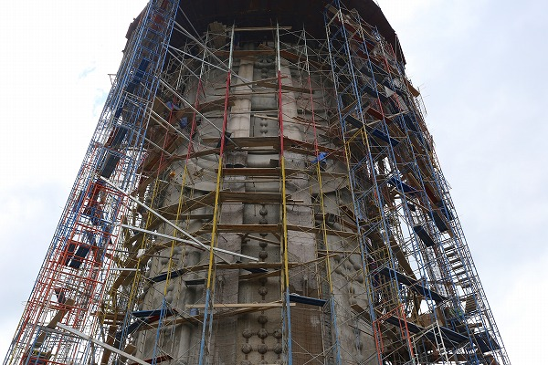
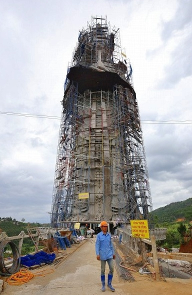

ハナシは霊福寺に遡る。
霊福寺の旧本堂の片隅にこんなポスターがあった。
勿論私の中の
珍寺センサーが即発動！
おおお！なんじゃこりゃあ！
何何何何！！！建設中の観音様の写真じゃあないの！
しかもメチャデカそうじゃないの。
ベトナムの大観音事情にある程度精通した私が知る限り、現時点ではベトナム最大級の観音像だと思う、多分。
さて、問題はここからだ。
この観音様がどこにあって今どうなっているのか？
霊福寺の旧本堂にいたお坊さんを捕まえてこの大観音様はどこにあるのかを聞いてみたものの、相手はベトナム語、こっちは日本語と怪しい英語、あとはあまり役に立たないグーグル翻訳。
ついでに他のお坊さんやらお掃除のおばさんやら英語のできるベトナム人の参拝者やらを巻き込んでの大騒ぎ。
で、判明したのはここから南西に位置する
リンアン寺という寺にこの大観音はある、ということ。
そしてまだ完成してないということ。
それだけ判れば充分だ。
あとなんでこのポスターが霊福寺に貼られていたのかは疑問だったが、これ以上ややこしいハナシは無理！
何で完成してない観音様など見たいんだ？という顔をしたお坊さんに別れを告げ、リンアン寺に向かうことにした。
リンアン寺はダラット市街の南東30キロほどのナンバンという村にある。
ダラットの街から山を越え1時間ほど走るとリンアン寺に到着した。
いきなりおりました巨大な観音様。
54ｍだそうな。
日本で言えば東京湾観音や会津慈母観音とほぼ同じ大きさ。
…ってこれでフムフムと思う人もあまりいないか…。
東南アジアの大観音では定番の瓶を持った観音像である。
前回訪問した
ダナンのレディブッダが67ｍなのでそれよりはやや小さめだが、足場が組んであるからか、数字以上に大きく見える。
カッチョイーー！！！

カッキー！！！
傍らには完成予想図が掲げられている。
完成図より建設中の今の姿の方に心ときめいてしまうのは私だけだろうか？
チョイと近くで見させていただきやすよ。
日本だったら作業員に制止されるであろう距離まで近づいても、そこは大らかな御国柄、特に何も言われませんでした。
どっちかというと「物好きな奴が見に来てるなー」というニュアンスでした。
ウワモノの観音像に比べて台座は裾窄まり。
構造的に大丈夫なんだろうか？日本の建築物に比べてかなり華奢に思えるのだが。
傍から見ると心配だが、地震のない国ではこれでＯＫなのだろう。
いや、内部とか見てないから何とも言えないが。
さて、順序が逆になってしまったが本堂にお参りに行きましょうぞ。
本堂内には釈迦三尊像と千手観音。どれもベトナムの仏像らしくピッカピカのテッカテカだ。
本堂正面にはデカい龍の張り子。
祭りにでもつかうのだろうか。
本堂の裏には
デカい弥勒菩薩さんが満面の笑みで座っていた。
コンクリ製だが、メタリック塗装をしているので顔とかはテッカテカです。
後には扉があって中に入れるようになっている。
鍵がかかっていて入れなかったが、物置のようでした。
巨大弥勒さんの脇にはずーっと観音様が並んでいる。
テラコッタ製のようだった。
何故かベトナムのお寺に行くとこんな感じの木彫物が多い。
天上天下君。
後でママも応援しているぞ！
テラコッタ観音群の先には仏陀像。
それほど大きくはないが、ベトナムの大仏にありがちな端正な表情の仏像だ。
盆栽もベトナムのお寺ではよく見るアイテムのひとつだ。
あと盆石もね。
盆石には仏像や仏塔などを配してジオラマ感を出してあるものが多い。
詳しくは宮田珠己アニキの名著
「ふしぎ盆栽ホンノンボ」を御覧くだされ。

で、再び大観音へ。
内装はまだまだだが、まあ、あと2〜3年もすれば完成するのではなかろうか。
再び来るかどうかは微妙だが、もしもダラットに行かれた方でここまで足を延ばされる奇特な方がいらっしゃったら、是非とも現状を教えてくだされ。
ダラットの街からリンアン寺に行く途中にあった大観音。
ChuaVanDocというお寺だった。
大きさとしては15メートル位かな。
次へGO！